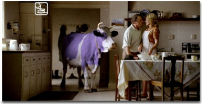

Zoals Immanuel Kant al schreef is een belangrijk
kenmerk van de (hoofd)mens "zijn pragmatische aanleg (om andere mensen
vakkundig te gebruiken voor zijn doeleinden)". De mens gezien als (slechts) de verzameling
van gereedschappen zal als ego zeker al deze gereedschappen
inzetten in het gebruik van alles in zijn omgeving, inclusief alle
andere mensen, om de doeleinden van het ego te bereiken. Geef de
onvolprezen hersenen de gelegenheid en vrijheid dat te doen en het
zal gebeuren: het is de enige verklaring voor onze situatie zoals
hiervoor beschreven onder ‘Bijsluiter’. Ondertussen is
er een grote groep professionele Hoofdmensen die al lang weten dat
de hersenen op principieel niveau slechts twee dingen kunnen: #1
gedragsprogramma's schrijven en #2 gedragsprogramma's uitvoeren.
Deze hoofdmensen hebben zichzelf zeer bekwaamd in #1
gedragsprogramma's schrijven, maar dan vooral voor andere
mensen...
Propaganda, PR, reclame: de kern van deze
activiteiten is programma's schrijven voor andermans hersenen
om daarmee hun gedrag te programmeren. Doel daarvan is precies wat Immanuel Kant al
schreef. Maar ook NLP, is een hulpmiddel om, als dat zo uitkomt,
andere mensen precies te laten denken en doen wat wij willen dat ze
denken en doen.
Een voorbeeldje: terwijl ik aan dit boek schrijf
speelt op de TV een commercial met de indringende boodschap
"durf teder te
zijn". De context waarin
dit gezegd wordt is... reclame voor chocolade. Milka chocolade om
precies te zijn. Ooit eerder koppelde Milka het emotionele
woordje teder al aan haar merk (sinds 1901 is Milka
'de tederste chocolade, verwenning...) en nu dus de
boodschap dat je teder moet durven zijn, dus mannen die dat durven
en vrouwen die dat erg 'metro' fijn vinden, en dan de
setting:

Ja, een romantisch moment tussen twee mensen, met
een paarse koe in hun keuken, dat dan weer wel. Het beoogde effect
is meervoudig: bij het simpele woordje 'teder' een associatie met
het woordje 'Milka' scheppen, verlangen naar tederheid aan Milka
chocolade koppelen, het durven teder te zijn te koppelen aan het
(door hem voor haar kopen van) Milka chocolade etc.
etc.
Het 'framen' en 'ankeren' van koopprogramma's aan
sterke niveau 1, 2 of 3 breintriggers gebeurt de hele dag door en over al onze
zintuigen. Zolang mensen zich bewust zijn van het feit dat ze
feitelijk gemanipuleerd worden is er niets mis mee: reclamemensen
weten gewoon veel meer over de werking van onbewuste hersenen en
dat passen ze heel rationeel toe. Zoals in het volgende voorbeeld
waarin ik vier plaatjes uit een reclamefilmpje laat
zien:
De boodschap (pay-off) hierbij is
"Een Gevoel dat je Nooit
Vergeet", en ja, het is
natuurlijk een reclamefilmpje voor ... een auto. De Peugeot 208 om
precies te zijn. Denkt u hier nog eens wat aandachtiger over na...
Of neem een Ziggo-abonnement want zij weten wat je zoekt: "Behoefte
aan meer diepte in je leven? Met Ziggo On Demand kijk je vanaf je
eigen bank 3D films, zoals Gravity, Thor of Las Vegas!
#bekijkhetmaar". Zo simpel kan 'meer diepte in je leven' dus
zijn...
In onze wereld van de Hoofdmensen worden we echt
de hele dag door gebombardeerd met allerlei van dit soort
programmatjes, en die programmatjes werken. Een van de nieuwe
ontwikkelingen daarin is Neurensics dat heel concreet de Hoofdmens
'beter programmeert'. Bijvoorbeeld door (in hun eigen woorden op
www.neurensics.com) "De werking van radioreclame in het brein. In
opdracht van 538 en Mindshare heeft Neurensics 25 proefpersonen,
mannen van 20-49 jaar oud en luisteraar van 538, in een MRI-scanner
gelegd waarbij ze werden blootgesteld aan radioreclame. De
proefpersonen dachten aan een taalonderzoek deel te nemen en kregen
een ‘lettertaak’ voorgelegd tijdens de scan. Met een
lichte en zware lettertaak is het bewust en onbewust luisteren naar
de radio nagebootst. In totaal zijn er 32 verschillende
radiocommercials gebruikt met wisselende combinaties van
eigenschappen. Hierdoor geven de resultaten ook inzicht in het
belang van eigenschappen als humor, sound logo, actie- versus
themareclame en visual transfer. Het onderzoek levert een aantal
inzichten waarmee adverteerders, radio-exploitanten en mediabureaus
een vertaalslag naar de mediaplanning praktijk kunnen maken."
Kortom; de techniek van het nog beter programmeren van jouw
brein.